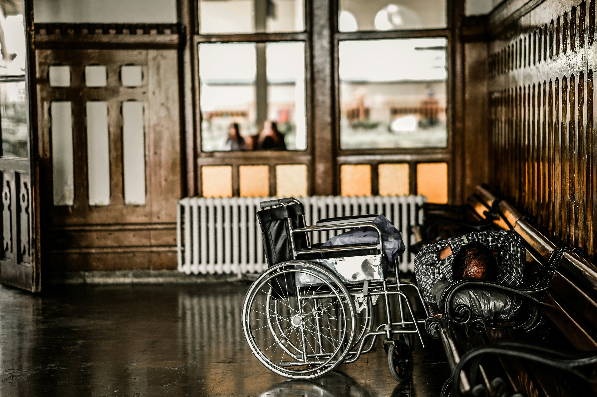

Don Du Matériel medical
Rejoignez notre communauté
Donnez une seconde vie à votre matériel médical inutilisé et aidez ceux qui en ont vraiment besoin. Ensemble, faisons la différence en offrant soutien et espoir à ceux qui en manquent.
Donner et aider
